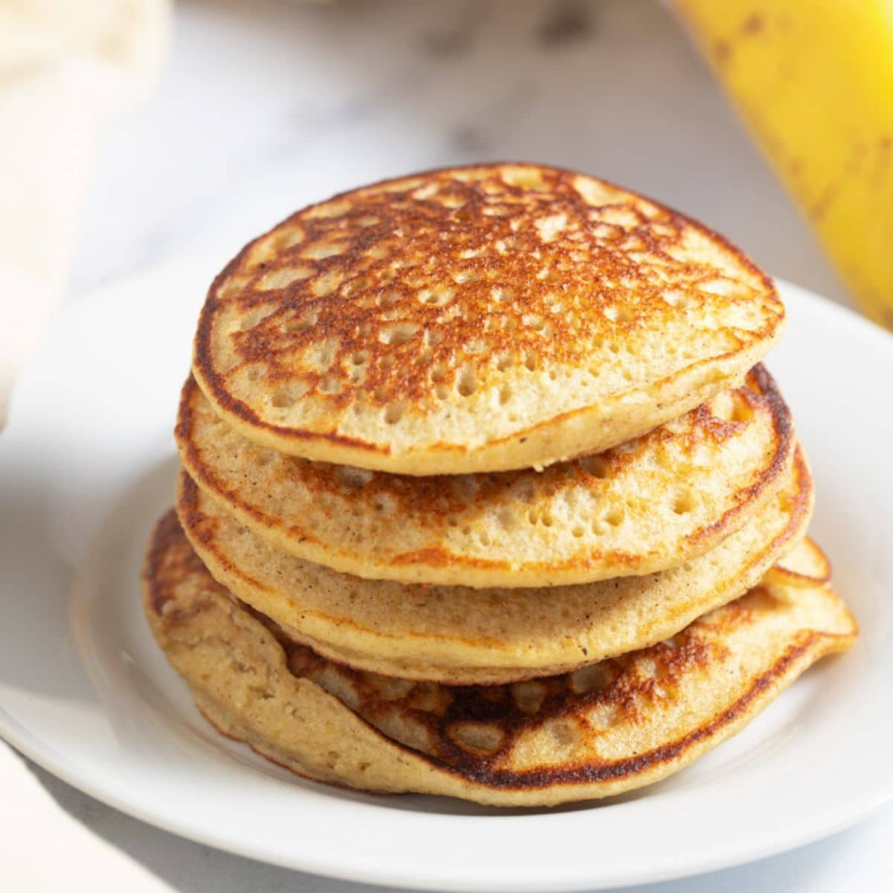

Oatmeal Pancakes

Description
A nutritive alternative from the wheat sour based pancakes. This delicious breakfast can be combine with any syrup, honey and toppings that you'll like to add.
Ingredients
- 1 cup of rolled oat
- 1 tbs of peanut butter
- 2 eggs
- 1 cup of milk
- 2 tbs of olive oil
Steps
- Blend the rolled oat until you have a sour like consistency.
- Put the sour, peanut butter, eggs, milk and 1 tbs of olive in a bowl.
- Mix to the point to all the ingredients integrate together.
- Grease a pan with the tbs of olive oil.
- Wait for one side to be cook and flip the pancake.
- Serve in a plate and add voilà! Your pancakes are ready.
This ingredients are equivalent to around 5 or 6 portions.